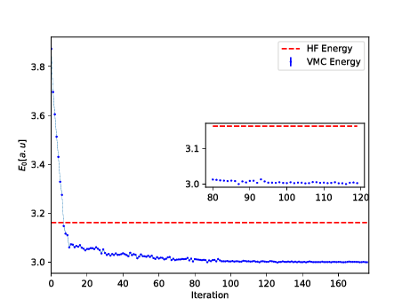

From Variational Monte Carlo to Boltzmann Machines and Machine Learning. Boltzmann Machines
May 23, 2019
Introduction
Why use a generative model rather than the more well known discriminative deep neural networks (DNN)?
- Discriminitave methods have several limitations: They are mainly supervised learning methods, thus requiring labeled data. And there are tasks they cannot accomplish, like drawing new examples from an unknown probability distribution.
- A generative model can learn to represent and sample from a probability distribution. The core idea is to learn a parametric model of the probability distribution from which the training data was drawn. As an example
- A model for images could learn to draw new examples of cats and dogs, given a training dataset of images of cats and dogs.
- Generate a sample of an ordered or disordered Ising model phase, having been given samples of such phases.
- Model the trial function for Monte Carlo calculations
- Both use gradient-descent based learning procedures for minimizing cost functions
- Energy based models don't use backpropagation and automatic differentiation for computing gradients, instead turning to Markov Chain Monte Carlo methods.
- DNNs often have several hidden layers. A restricted Boltzmann machine has only one hidden layer, however several RBMs can be stacked to make up Deep Belief Networks, of which they constitute the building blocks.
A BM is what we would call an undirected probabilistic graphical model with stochastic continuous or discrete units.
It is interpreted as a stochastic recurrent neural network where the state of each unit(neurons/nodes) depends on the units it is connected to. The weights in the network represent thus the strength of the interaction between various units/nodes.
It turns into a Hopfield network if we choose deterministic rather than stochastic units. In contrast to a Hopfield network, a BM is a so-called generative model. It allows us to generate new samples from the learned distribution.
A standard BM network is divided into a set of observable and visible units \( \hat{x} \) and a set of unknown hidden units/nodes \( \hat{h} \).
Additionally there can be bias nodes for the hidden and visible layers. These biases are normally set to \( 1 \).
BMs are stackable, meaning they cwe can train a BM which serves as input to another BM. We can construct deep networks for learning complex PDFs. The layers can be trained one after another, a feature which makes them popular in deep learning
However, they are often hard to train. This leads to the introduction of so-called restricted BMs, or RBMS. Here we take away all lateral connections between nodes in the visible layer as well as connections between nodes in the hidden layer. The network is illustrated in the figure below.

The network
The network layers:
- A function \( \mathbf{x} \) that represents the visible layer, a vector of \( M \) elements (nodes). This layer represents both what the RBM might be given as training input, and what we want it to be able to reconstruct. This might for example be the pixels of an image, the spin values of the Ising model, or coefficients representing speech.
- The function \( \mathbf{h} \) represents the hidden, or latent, layer. A vector of \( N \) elements (nodes). Also called "feature detectors".
Examples of this trick being employed in physics:
- The Hubbard-Stratonovich transformation
- The introduction of ghost fields in gauge theory
- Shadow wave functions in Quantum Monte Carlo simulations
- \( \mathbf{a} \) represents the visible bias, a vector of same length as \( \mathbf{x} \).
- \( \mathbf{b} \) represents the hidden bias, a vector of same lenght as \( \mathbf{h} \).
- \( W \) represents the interaction weights, a matrix of size \( M\times N \).
Joint distribution
The restricted Boltzmann machine is described by a Bolztmann distribution $$ \begin{align} P_{rbm}(\mathbf{x},\mathbf{h}) = \frac{1}{Z} e^{-\frac{1}{T_0}E(\mathbf{x},\mathbf{h})}, \label{_auto1} \end{align} $$ where \( Z \) is the normalization constant or partition function, defined as $$ \begin{align} Z = \int \int e^{-\frac{1}{T_0}E(\mathbf{x},\mathbf{h})} d\mathbf{x} d\mathbf{h}. \label{_auto2} \end{align} $$ It is common to ignore \( T_0 \) by setting it to one.Network Elements, the energy function
The function \( E(\mathbf{x},\mathbf{h}) \) gives the energy of a configuration (pair of vectors) \( (\mathbf{x}, \mathbf{h}) \). The lower the energy of a configuration, the higher the probability of it. This function also depends on the parameters \( \mathbf{a} \), \( \mathbf{b} \) and \( W \). Thus, when we adjust them during the learning procedure, we are adjusting the energy function to best fit our problem.
An expression for the energy function is $$ E(\hat{x},\hat{h}) = -\sum_{ia}^{NA}b_i^a \alpha_i^a(x_i)-\sum_{jd}^{MD}c_j^d \beta_j^d(h_j)-\sum_{ijad}^{NAMD}b_i^a \alpha_i^a(x_i)c_j^d \beta_j^d(h_j)w_{ij}^{ad}. $$
Here \( \beta_j^d(h_j) \) and \( \alpha_i^a(x_j) \) are so-called transfer functions that map a given input value to a desired feature value. The labels \( a \) and \( d \) denote that there can be multiple transfer functions per variable. The first sum depends only on the visible units. The second on the hidden ones. Note that there is no connection between nodes in a layer.
The quantities \( b \) and \( c \) can be interpreted as the visible and hidden biases, respectively.
The connection between the nodes in the two layers is given by the weights \( w_{ij} \).
Defining different types of RBMs
There are different variants of RBMs, and the differences lie in the types of visible and hidden units we choose as well as in the implementation of the energy function \( E(\mathbf{x},\mathbf{h}) \).
RBMs were first developed using binary units in both the visible and hidden layer. The corresponding energy function is defined as follows: $$ \begin{align} E(\mathbf{x}, \mathbf{h}) = - \sum_i^M x_i a_i- \sum_j^N b_j h_j - \sum_{i,j}^{M,N} x_i w_{ij} h_j, \label{_auto3} \end{align} $$ where the binary values taken on by the nodes are most commonly 0 and 1.
Another varient is the RBM where the visible units are Gaussian while the hidden units remain binary: $$ \begin{align} E(\mathbf{x}, \mathbf{h}) = \sum_i^M \frac{(x_i - a_i)^2}{2\sigma_i^2} - \sum_j^N b_j h_j - \sum_{i,j}^{M,N} \frac{x_i w_{ij} h_j}{\sigma_i^2}. \label{_auto4} \end{align} $$
- RBMs are Useful when we model continuous data (i.e., we wish \( \mathbf{x} \) to be continuous)
- Requires a smaller learning rate, since there's no upper bound to the value a component might take in the reconstruction
- Softmax and multinomial units
- Gaussian visible and hidden units
- Binomial units
- Rectified linear units
Cost function
When working with a training dataset, the most common training approach is maximizing the log-likelihood of the training data. The log likelihood characterizes the log-probability of generating the observed data using our generative model. Using this method our cost function is chosen as the negative log-likelihood. The learning then consists of trying to find parameters that maximize the probability of the dataset, and is known as Maximum Likelihood Estimation (MLE). Denoting the parameters as \( \boldsymbol{\theta} = a_1,...,a_M,b_1,...,b_N,w_{11},...,w_{MN} \), the log-likelihood is given by $$ \begin{align} \mathcal{L}(\{ \theta_i \}) &= \langle \text{log} P_\theta(\boldsymbol{x}) \rangle_{data} \label{_auto5}\\ &= - \langle E(\boldsymbol{x}; \{ \theta_i\}) \rangle_{data} - \text{log} Z(\{ \theta_i\}), \label{_auto6} \end{align} $$ where we used that the normalization constant does not depend on the data, \( \langle \text{log} Z(\{ \theta_i\}) \rangle = \text{log} Z(\{ \theta_i\}) \) Our cost function is the negative log-likelihood, \( \mathcal{C}(\{ \theta_i \}) = - \mathcal{L}(\{ \theta_i \}) \)
Optimization / Training
The training procedure of choice often is Stochastic Gradient Descent (SGD). It consists of a series of iterations where we update the parameters according to the equation $$ \begin{align} \boldsymbol{\theta}_{k+1} = \boldsymbol{\theta}_k - \eta \nabla \mathcal{C} (\boldsymbol{\theta}_k) \label{_auto7} \end{align} $$ at each \( k \)-th iteration. There are a range of variants of the algorithm which aim at making the learning rate \( \eta \) more adaptive so the method might be more efficient while remaining stable.
We now need the gradient of the cost function in order to minimize it. We find that $$ \begin{align} \frac{\partial \mathcal{C}(\{ \theta_i\})}{\partial \theta_i} &= \langle \frac{\partial E(\boldsymbol{x}; \theta_i)}{\partial \theta_i} \rangle_{data} + \frac{\partial \text{log} Z(\{ \theta_i\})}{\partial \theta_i} \label{_auto8}\\ &= \langle O_i(\boldsymbol{x}) \rangle_{data} - \langle O_i(\boldsymbol{x}) \rangle_{model}, \label{_auto9} \end{align} $$ where in order to simplify notation we defined the "operator" $$ \begin{align} O_i(\boldsymbol{x}) = \frac{\partial E(\boldsymbol{x}; \theta_i)}{\partial \theta_i}, \label{_auto10} \end{align} $$ and used the statistical mechanics relationship between expectation values and the log-partition function: $$ \begin{align} \langle O_i(\boldsymbol{x}) \rangle_{model} = \text{Tr} P_\theta(\boldsymbol{x})O_i(\boldsymbol{x}) = - \frac{\partial \text{log} Z(\{ \theta_i\})}{\partial \theta_i}. \label{_auto11} \end{align} $$
The data-dependent term in the gradient is known as the positive phase of the gradient, while the model-dependent term is known as the negative phase of the gradient. The aim of the training is to lower the energy of configurations that are near observed data points (increasing their probability), and raising the energy of configurations that are far from observed data points (decreasing their probability).
The gradient of the negative log-likelihood cost function of a Binary-Binary RBM is then $$ \begin{align} \frac{\partial \mathcal{C} (w_{ij}, a_i, b_j)}{\partial w_{ij}} =& \langle x_i h_j \rangle_{data} - \langle x_i h_j \rangle_{model} \label{_auto12}\\ \frac{\partial \mathcal{C} (w_{ij}, a_i, b_j)}{\partial a_{ij}} =& \langle x_i \rangle_{data} - \langle x_i \rangle_{model} \label{_auto13}\\ \frac{\partial \mathcal{C} (w_{ij}, a_i, b_j)}{\partial b_{ij}} =& \langle h_i \rangle_{data} - \langle h_i \rangle_{model}. \label{_auto14}\\ \label{_auto15} \end{align} $$ To get the expectation values with respect to the data, we set the visible units to each of the observed samples in the training data, then update the hidden units according to the conditional probability found before. We then average over all samples in the training data to calculate expectation values with respect to the data.
Kullback-Leibler relative entropy
When the goal of the training is to approximate a probability distribution, as it is in generative modeling, another relevant measure is the Kullback-Leibler divergence, also known as the relative entropy or Shannon entropy. It is a non-symmetric measure of the dissimilarity between two probability density functions \( p \) and \( q \). If \( p \) is the unkown probability which we approximate with \( q \), we can measure the difference by $$ \begin{align} \text{KL}(p||q) = \int_{-\infty}^{\infty} p (\boldsymbol{x}) \log \frac{p(\boldsymbol{x})}{q(\boldsymbol{x})} d\boldsymbol{x}. \label{_auto16} \end{align} $$
Thus, the Kullback-Leibler divergence between the distribution of the training data \( f(\boldsymbol{x}) \) and the model distribution \( p(\boldsymbol{x}| \boldsymbol{\theta}) \) is $$ \begin{align} \text{KL} (f(\boldsymbol{x})|| p(\boldsymbol{x}| \boldsymbol{\theta})) =& \int_{-\infty}^{\infty} f (\boldsymbol{x}) \log \frac{f(\boldsymbol{x})}{p(\boldsymbol{x}| \boldsymbol{\theta})} d\boldsymbol{x} \label{_auto17}\\ =& \int_{-\infty}^{\infty} f(\boldsymbol{x}) \log f(\boldsymbol{x}) d\boldsymbol{x} - \int_{-\infty}^{\infty} f(\boldsymbol{x}) \log p(\boldsymbol{x}| \boldsymbol{\theta}) d\boldsymbol{x} \label{_auto18}\\ %=& \mathbb{E}_{f(\boldsymbol{x})} (\log f(\boldsymbol{x})) - \mathbb{E}_{f(\boldsymbol{x})} (\log p(\boldsymbol{x}| \boldsymbol{\theta})) =& \langle \log f(\boldsymbol{x}) \rangle_{f(\boldsymbol{x})} - \langle \log p(\boldsymbol{x}| \boldsymbol{\theta}) \rangle_{f(\boldsymbol{x})} \label{_auto19}\\ =& \langle \log f(\boldsymbol{x}) \rangle_{data} + \langle E(\boldsymbol{x}) \rangle_{data} + \log Z \label{_auto20}\\ =& \langle \log f(\boldsymbol{x}) \rangle_{data} + \mathcal{C}_{LL} . \label{_auto21} \end{align} $$
The first term is constant with respect to \( \boldsymbol{\theta} \) since \( f(\boldsymbol{x}) \) is independent of \( \boldsymbol{\theta} \). Thus the Kullback-Leibler Divergence is minimal when the second term is minimal. The second term is the log-likelihood cost function, hence minimizing the Kullback-Leibler divergence is equivalent to maximizing the log-likelihood.
To further understand generative models it is useful to study the gradient of the cost function which is needed in order to minimize it using methods like stochastic gradient descent.
The partition function is the generating function of expectation values, in particular there are mathematical relationships between expectation values and the log-partition function. In this case we have $$ \begin{align} \langle \frac{ \partial E(\boldsymbol{x}; \theta_i) } { \partial \theta_i} \rangle_{model} = \int p(\boldsymbol{x}| \boldsymbol{\theta}) \frac{ \partial E(\boldsymbol{x}; \theta_i) } { \partial \theta_i} d\boldsymbol{x} = -\frac{\partial \log Z(\theta_i)}{ \partial \theta_i} . \label{_auto22} \end{align} $$
Here \( \langle \cdot \rangle_{model} \) is the expectation value over the model probability distribution \( p(\boldsymbol{x}| \boldsymbol{\theta}) \).
Setting up for gradient descent calculations
Using the previous relationship we can express the gradient of the cost function as $$ \begin{align} \frac{\partial \mathcal{C}_{LL}}{\partial \theta_i} =& \langle \frac{ \partial E(\boldsymbol{x}; \theta_i) } { \partial \theta_i} \rangle_{data} + \frac{\partial \log Z(\theta_i)}{ \partial \theta_i} \label{_auto23}\\ =& \langle \frac{ \partial E(\boldsymbol{x}; \theta_i) } { \partial \theta_i} \rangle_{data} - \langle \frac{ \partial E(\boldsymbol{x}; \theta_i) } { \partial \theta_i} \rangle_{model} \label{_auto24}\\ %=& \langle O_i(\boldsymbol{x}) \rangle_{data} - \langle O_i(\boldsymbol{x}) \rangle_{model} \label{_auto25} \end{align} $$
This expression shows that the gradient of the log-likelihood cost function is a difference of moments, with one calculated from the data and one calculated from the model. The data-dependent term is called the positive phase and the model-dependent term is called the negative phase of the gradient. We see now that minimizing the cost function results in lowering the energy of configurations \( \boldsymbol{x} \) near points in the training data and increasing the energy of configurations not observed in the training data. That means we increase the model's probability of configurations similar to those in the training data.
The gradient of the cost function also demonstrates why gradients of unsupervised, generative models must be computed differently from for those of for example FNNs. While the data-dependent expectation value is easily calculated based on the samples \( \boldsymbol{x}_i \) in the training data, we must sample from the model in order to generate samples from which to caclulate the model-dependent term. We sample from the model by using MCMC-based methods. We can not sample from the model directly because the partition function \( Z \) is generally intractable.
As in supervised machine learning problems, the goal is also here to perform well on unseen data, that is to have good generalization from the training data. The distribution \( f(x) \) we approximate is not the true distribution we wish to estimate, it is limited to the training data. Hence, in unsupervised training as well it is important to prevent overfitting to the training data. Thus it is common to add regularizers to the cost function in the same manner as we discussed for say linear regression.
RBMs for the quantum many body problem
The idea of applying RBMs to quantum many body problems was presented by G. Carleo and M. Troyer, working with ETH Zurich and Microsoft Research. There are several interesting articles that follow up the research presented by Carleo and Troyer, see for example Saito's work using neural networks.
Some of their motivation included
- The wave function \( \Psi \) is a monolithic mathematical quantity that contains all the information on a quantum state, be it a single particle or a complex molecule. In principle, an exponential amount of information is needed to fully encode a generic many-body quantum state.
- There are still interesting open problems, including fundamental questions ranging from the dynamical properties of high-dimensional systems to the exact ground-state properties of strongly interacting fermions.
- The difficulty lies in finding a general strategy to reduce the exponential complexity of the full many-body wave function down to its most essential features. That is
- Dimensional reduction
- Feature extraction
- Among the most successful techniques to attack these challenges, artifical neural networks play a prominent role.
- Want to understand whether an artifical neural network may adapt to describe a quantum system.
Representing the wave function
The wavefunction should be a probability amplitude depending on \( \boldsymbol{x} \). The RBM model is given by the joint distribution of \( \boldsymbol{x} \) and \( \boldsymbol{h} \) $$ \begin{align} F_{rbm}(\mathbf{x},\mathbf{h}) = \frac{1}{Z} e^{-\frac{1}{T_0}E(\mathbf{x},\mathbf{h})}. \label{_auto26} \end{align} $$
To find the marginal distribution of \( \boldsymbol{x} \) we set: $$ \begin{align} F_{rbm}(\mathbf{x}) &= \sum_\mathbf{h} F_{rbm}(\mathbf{x}, \mathbf{h}) \label{_auto27}\\ &= \frac{1}{Z}\sum_\mathbf{h} e^{-E(\mathbf{x}, \mathbf{h})}. \label{_auto28} \end{align} $$
Now this is what we use to represent the wave function, calling it a neural-network quantum state (NQS) $$ \begin{align} \Psi (\mathbf{X}) &= F_{rbm}(\mathbf{x}) \label{_auto29}\\ &= \frac{1}{Z}\sum_{\boldsymbol{h}} e^{-E(\mathbf{x}, \mathbf{h})} \label{_auto30}\\ &= \frac{1}{Z} \sum_{\{h_j\}} e^{-\sum_i^M \frac{(x_i - a_i)^2}{2\sigma^2} + \sum_j^N b_j h_j + \sum_\ {i,j}^{M,N} \frac{x_i w_{ij} h_j}{\sigma^2}} \label{_auto31}\\ &= \frac{1}{Z} e^{-\sum_i^M \frac{(x_i - a_i)^2}{2\sigma^2}} \prod_j^N (1 + e^{b_j + \sum_i^M \frac{x\ _i w_{ij}}{\sigma^2}}). \label{_auto32}\\ \label{_auto33} \end{align} $$
Choose the cost function
Now we don't necessarily have training data (unless we generate it by using some other method). However, what we do have is the variational principle which allows us to obtain the ground state wave function by minimizing the expectation value of the energy of a trial wavefunction (corresponding to the untrained NQS). Similarly to the traditional variational Monte Carlo method then, it is the local energy we wish to minimize. The gradient to use for the stochastic gradient descent procedure is $$ \begin{align} C_i = \frac{\partial \langle E_L \rangle}{\partial \theta_i} = 2(\langle E_L \frac{1}{\Psi}\frac{\partial \Psi}{\partial \theta_i} \rangle - \langle E_L \rangle \langle \frac{1}{\Psi}\frac{\partial \Psi}{\partial \theta_i} \rangle ), \label{_auto34} \end{align} $$ where the local energy is given by $$ \begin{align} E_L = \frac{1}{\Psi} \hat{\mathbf{H}} \Psi. \label{_auto35} \end{align} $$
Mathematical details
Because we are restricted to potential functions which are positive it is convenient to express them as exponentials, so that $$ \begin{align} \phi_C (\boldsymbol{x}_C) = e^{-E_C(\boldsymbol{x}_C)} \label{_auto36} \end{align} $$
where \( E(\boldsymbol{x}_C) \) is called an energy function, and the exponential representation is the Boltzmann distribution. The joint distribution is defined as the product of potentials.
The joint distribution of the random variables is then $$ \begin{align} p(\boldsymbol{x}) =& \frac{1}{Z} \prod_C \phi_C (\boldsymbol{x}_C) \nonumber \\ =& \frac{1}{Z} \prod_C e^{-E_C(\boldsymbol{x}_C)} \nonumber \\ =& \frac{1}{Z} e^{-\sum_C E_C(\boldsymbol{x}_C)} \nonumber \\ =& \frac{1}{Z} e^{-E(\boldsymbol{x})}. \label{_auto37} \end{align} $$ $$ \begin{align} p_{BM}(\boldsymbol{x}, \boldsymbol{h}) = \frac{1}{Z_{BM}} e^{-\frac{1}{T}E_{BM}(\boldsymbol{x}, \boldsymbol{h})} , \label{_auto38} \end{align} $$
with the partition function $$ \begin{align} Z_{BM} = \int \int e^{-\frac{1}{T} E_{BM}(\tilde{\boldsymbol{x}}, \tilde{\boldsymbol{h}})} d\tilde{\boldsymbol{x}} d\tilde{\boldsymbol{h}} . \label{_auto39} \end{align} $$
\( T \) is a physics-inspired parameter named temperature and will be assumed to be 1 unless otherwise stated. The energy function of the Boltzmann machine determines the interactions between the nodes and is defined $$ \begin{align} E_{BM}(\boldsymbol{x}, \boldsymbol{h}) =& - \sum_{i, k}^{M, K} a_i^k \alpha_i^k (x_i) - \sum_{j, l}^{N, L} b_j^l \beta_j^l (h_j) - \sum_{i,j,k,l}^{M,N,K,L} \alpha_i^k (x_i) w_{ij}^{kl} \beta_j^l (h_j) \nonumber \\ &- \sum_{i, m=i+1, k}^{M, M, K} \alpha_i^k (x_i) v_{im}^k \alpha_m^k (x_m) - \sum_{j,n=j+1,l}^{N,N,L} \beta_j^l (h_j) u_{jn}^l \beta_n^l (h_n). \label{_auto40} \end{align} $$
Here \( \alpha_i^k (x_i) \) and \( \beta_j^l (h_j) \) are one-dimensional transfer functions or mappings from the given input value to the desired feature value. They can be arbitrary functions of the input variables and are independent of the parameterization (parameters referring to weight and biases), meaning they are not affected by training of the model. The indices \( k \) and \( l \) indicate that there can be multiple transfer functions per variable. Furthermore, \( a_i^k \) and \( b_j^l \) are the visible and hidden bias. \( w_{ij}^{kl} \) are weights of the \textbf{inter-layer} connection terms which connect visible and hidden units. $ v_{im}^k$ and \( u_{jn}^l \) are weights of the \textbf{intra-layer} connection terms which connect the visible units to each other and the hidden units to each other, respectively.
We remove the intra-layer connections by setting \( v_{im} \) and \( u_{jn} \) to zero. The expression for the energy of the RBM is then $$ \begin{align} E_{RBM}(\boldsymbol{x}, \boldsymbol{h}) = - \sum_{i, k}^{M, K} a_i^k \alpha_i^k (x_i) - \sum_{j, l}^{N, L} b_j^l \beta_j^l (h_j) - \sum_{i,j,k,l}^{M,N,K,L} \alpha_i^k (x_i) w_{ij}^{kl} \beta_j^l (h_j). \label{_auto41} \end{align} $$ resulting in $$ \begin{align} P_{RBM} (\boldsymbol{x}) =& \int P_{RBM} (\boldsymbol{x}, \tilde{\boldsymbol{h}}) d \tilde{\boldsymbol{h}} \nonumber \\ =& \frac{1}{Z_{RBM}} \int e^{-E_{RBM} (\boldsymbol{x}, \tilde{\boldsymbol{h}}) } d\tilde{\boldsymbol{h}} \nonumber \\ =& \frac{1}{Z_{RBM}} \int e^{\sum_{i, k} a_i^k \alpha_i^k (x_i) + \sum_{j, l} b_j^l \beta_j^l (\tilde{h}_j) + \sum_{i,j,k,l} \alpha_i^k (x_i) w_{ij}^{kl} \beta_j^l (\tilde{h}_j)} d\tilde{\boldsymbol{h}} \nonumber \\ =& \frac{1}{Z_{RBM}} e^{\sum_{i, k} a_i^k \alpha_i^k (x_i)} \int \prod_j^N e^{\sum_l b_j^l \beta_j^l (\tilde{h}_j) + \sum_{i,k,l} \alpha_i^k (x_i) w_{ij}^{kl} \beta_j^l (\tilde{h}_j)} d\tilde{\boldsymbol{h}} \nonumber \\ =& \frac{1}{Z_{RBM}} e^{\sum_{i, k} a_i^k \alpha_i^k (x_i)} \biggl( \int e^{\sum_l b_1^l \beta_1^l (\tilde{h}_1) + \sum_{i,k,l} \alpha_i^k (x_i) w_{i1}^{kl} \beta_1^l (\tilde{h}_1)} d \tilde{h}_1 \nonumber \\ & \times \int e^{\sum_l b_2^l \beta_2^l (\tilde{h}_2) + \sum_{i,k,l} \alpha_i^k (x_i) w_{i2}^{kl} \beta_2^l (\tilde{h}_2)} d \tilde{h}_2 \nonumber \\ & \times ... \nonumber \\ & \times \int e^{\sum_l b_N^l \beta_N^l (\tilde{h}_N) + \sum_{i,k,l} \alpha_i^k (x_i) w_{iN}^{kl} \beta_N^l (\tilde{h}_N)} d \tilde{h}_N \biggr) \nonumber \\ =& \frac{1}{Z_{RBM}} e^{\sum_{i, k} a_i^k \alpha_i^k (x_i)} \prod_j^N \int e^{\sum_l b_j^l \beta_j^l (\tilde{h}_j) + \sum_{i,k,l} \alpha_i^k (x_i) w_{ij}^{kl} \beta_j^l (\tilde{h}_j)} d\tilde{h}_j \label{_auto42} \end{align} $$
Similarly $$ \begin{align} P_{RBM} (\boldsymbol{h}) =& \frac{1}{Z_{RBM}} \int e^{-E_{RBM} (\tilde{\boldsymbol{x}}, \boldsymbol{h})} d\tilde{\boldsymbol{x}} \nonumber \\ =& \frac{1}{Z_{RBM}} e^{\sum_{j, l} b_j^l \beta_j^l (h_j)} \prod_i^M \int e^{\sum_k a_i^k \alpha_i^k (\tilde{x}_i) + \sum_{j,k,l} \alpha_i^k (\tilde{x}_i) w_{ij}^{kl} \beta_j^l (h_j)} d\tilde{x}_i \label{_auto43} \end{align} $$
Using Bayes theorem $$ \begin{align} P_{RBM} (\boldsymbol{h}|\boldsymbol{x}) =& \frac{P_{RBM} (\boldsymbol{x}, \boldsymbol{h})}{P_{RBM} (\boldsymbol{x})} \nonumber \\ =& \frac{\frac{1}{Z_{RBM}} e^{\sum_{i, k} a_i^k \alpha_i^k (x_i) + \sum_{j, l} b_j^l \beta_j^l (h_j) + \sum_{i,j,k,l} \alpha_i^k (x_i) w_{ij}^{kl} \beta_j^l (h_j)}} {\frac{1}{Z_{RBM}} e^{\sum_{i, k} a_i^k \alpha_i^k (x_i)} \prod_j^N \int e^{\sum_l b_j^l \beta_j^l (\tilde{h}_j) + \sum_{i,k,l} \alpha_i^k (x_i) w_{ij}^{kl} \beta_j^l (\tilde{h}_j)} d\tilde{h}_j} \nonumber \\ =& \prod_j^N \frac{e^{\sum_l b_j^l \beta_j^l (h_j) + \sum_{i,k,l} \alpha_i^k (x_i) w_{ij}^{kl} \beta_j^l (h_j)} } {\int e^{\sum_l b_j^l \beta_j^l (\tilde{h}_j) + \sum_{i,k,l} \alpha_i^k (x_i) w_{ij}^{kl} \beta_j^l (\tilde{h}_j)} d\tilde{h}_j} \label{_auto44} \end{align} $$
Similarly $$ \begin{align} P_{RBM} (\boldsymbol{x}|\boldsymbol{h}) =& \frac{P_{RBM} (\boldsymbol{x}, \boldsymbol{h})}{P_{RBM} (\boldsymbol{h})} \nonumber \\ =& \prod_i^M \frac{e^{\sum_k a_i^k \alpha_i^k (x_i) + \sum_{j,k,l} \alpha_i^k (x_i) w_{ij}^{kl} \beta_j^l (h_j)}} {\int e^{\sum_k a_i^k \alpha_i^k (\tilde{x}_i) + \sum_{j,k,l} \alpha_i^k (\tilde{x}_i) w_{ij}^{kl} \beta_j^l (h_j)} d\tilde{x}_i} \label{_auto45} \end{align} $$
The original RBM had binary visible and hidden nodes. They were showned to be universal approximators of discrete distributions. It was also shown that adding hidden units yields strictly improved modelling power. The common choice of binary values are 0 and 1. However, in some physics applications, -1 and 1 might be a more natural choice. We will here use 0 and 1. $$ \begin{align} E_{BB}(\boldsymbol{x}, \mathbf{h}) = - \sum_i^M x_i a_i- \sum_j^N b_j h_j - \sum_{i,j}^{M,N} x_i w_{ij} h_j. \label{_auto46} \end{align} $$ $$ \begin{align} p_{BB}(\boldsymbol{x}, \boldsymbol{h}) =& \frac{1}{Z_{BB}} e^{\sum_i^M a_i x_i + \sum_j^N b_j h_j + \sum_{ij}^{M,N} x_i w_{ij} h_j} \label{_auto47}\\ =& \frac{1}{Z_{BB}} e^{\boldsymbol{x}^T \boldsymbol{a} + \boldsymbol{b}^T \boldsymbol{h} + \boldsymbol{x}^T \boldsymbol{W} \boldsymbol{h}} \label{_auto48} \end{align} $$
with the partition function $$ \begin{align} Z_{BB} = \sum_{\boldsymbol{x}, \boldsymbol{h}} e^{\boldsymbol{x}^T \boldsymbol{a} + \boldsymbol{b}^T \boldsymbol{h} + \boldsymbol{x}^T \boldsymbol{W} \boldsymbol{h}} . \label{_auto49} \end{align} $$
Marginal Probability Density Functions
In order to find the probability of any configuration of the visible units we derive the marginal probability density function. $$ \begin{align} p_{BB} (\boldsymbol{x}) =& \sum_{\boldsymbol{h}} p_{BB} (\boldsymbol{x}, \boldsymbol{h}) \label{_auto50}\\ =& \frac{1}{Z_{BB}} \sum_{\boldsymbol{h}} e^{\boldsymbol{x}^T \boldsymbol{a} + \boldsymbol{b}^T \boldsymbol{h} + \boldsymbol{x}^T \boldsymbol{W} \boldsymbol{h}} \nonumber \\ =& \frac{1}{Z_{BB}} e^{\boldsymbol{x}^T \boldsymbol{a}} \sum_{\boldsymbol{h}} e^{\sum_j^N (b_j + \boldsymbol{x}^T \boldsymbol{w}_{\ast j})h_j} \nonumber \\ =& \frac{1}{Z_{BB}} e^{\boldsymbol{x}^T \boldsymbol{a}} \sum_{\boldsymbol{h}} \prod_j^N e^{ (b_j + \boldsymbol{x}^T \boldsymbol{w}_{\ast j})h_j} \nonumber \\ =& \frac{1}{Z_{BB}} e^{\boldsymbol{x}^T \boldsymbol{a}} \bigg ( \sum_{h_1} e^{(b_1 + \boldsymbol{x}^T \boldsymbol{w}_{\ast 1})h_1} \times \sum_{h_2} e^{(b_2 + \boldsymbol{x}^T \boldsymbol{w}_{\ast 2})h_2} \times \nonumber \\ & ... \times \sum_{h_2} e^{(b_N + \boldsymbol{x}^T \boldsymbol{w}_{\ast N})h_N} \bigg ) \nonumber \\ =& \frac{1}{Z_{BB}} e^{\boldsymbol{x}^T \boldsymbol{a}} \prod_j^N \sum_{h_j} e^{(b_j + \boldsymbol{x}^T \boldsymbol{w}_{\ast j}) h_j} \nonumber \\ =& \frac{1}{Z_{BB}} e^{\boldsymbol{x}^T \boldsymbol{a}} \prod_j^N (1 + e^{b_j + \boldsymbol{x}^T \boldsymbol{w}_{\ast j}}) . \label{_auto51} \end{align} $$
A similar derivation yields the marginal probability of the hidden units $$ \begin{align} p_{BB} (\boldsymbol{h}) = \frac{1}{Z_{BB}} e^{\boldsymbol{b}^T \boldsymbol{h}} \prod_i^M (1 + e^{a_i + \boldsymbol{w}_{i\ast}^T \boldsymbol{h}}) . \label{_auto52} \end{align} $$
Conditional Probability Density Functions
We derive the probability of the hidden units given the visible units using Bayes' rule $$ \begin{align} p_{BB} (\boldsymbol{h}|\boldsymbol{x}) =& \frac{p_{BB} (\boldsymbol{x}, \boldsymbol{h})}{p_{BB} (\boldsymbol{x})} \nonumber \\ =& \frac{ \frac{1}{Z_{BB}} e^{\boldsymbol{x}^T \boldsymbol{a} + \boldsymbol{b}^T \boldsymbol{h} + \boldsymbol{x}^T \boldsymbol{W} \boldsymbol{h}} } {\frac{1}{Z_{BB}} e^{\boldsymbol{x}^T \boldsymbol{a}} \prod_j^N (1 + e^{b_j + \boldsymbol{x}^T \boldsymbol{w}_{\ast j}})} \nonumber \\ =& \frac{ e^{\boldsymbol{x}^T \boldsymbol{a}} e^{ \sum_j^N (b_j + \boldsymbol{x}^T \boldsymbol{w}_{\ast j} ) h_j} } { e^{\boldsymbol{x}^T \boldsymbol{a}} \prod_j^N (1 + e^{b_j + \boldsymbol{x}^T \boldsymbol{w}_{\ast j}})} \nonumber \\ =& \prod_j^N \frac{ e^{(b_j + \boldsymbol{x}^T \boldsymbol{w}_{\ast j} ) h_j} } {1 + e^{b_j + \boldsymbol{x}^T \boldsymbol{w}_{\ast j}}} \nonumber \\ =& \prod_j^N p_{BB} (h_j| \boldsymbol{x}) . \label{_auto53} \end{align} $$
From this we find the probability of a hidden unit being "on" or "off": $$ \begin{align} p_{BB} (h_j=1 | \boldsymbol{x}) =& \frac{ e^{(b_j + \boldsymbol{x}^T \boldsymbol{w}_{\ast j} ) h_j} } {1 + e^{b_j + \boldsymbol{x}^T \boldsymbol{w}_{\ast j}}} \label{_auto54}\\ =& \frac{ e^{(b_j + \boldsymbol{x}^T \boldsymbol{w}_{\ast j} )} } {1 + e^{b_j + \boldsymbol{x}^T \boldsymbol{w}_{\ast j}}} \label{_auto55}\\ =& \frac{ 1 }{1 + e^{-(b_j + \boldsymbol{x}^T \boldsymbol{w}_{\ast j})} } , \label{_auto56} \end{align} $$ and $$ \begin{align} p_{BB} (h_j=0 | \boldsymbol{x}) =\frac{ 1 }{1 + e^{b_j + \boldsymbol{x}^T \boldsymbol{w}_{\ast j}} } . \label{_auto57} \end{align} $$
Similarly we have that the conditional probability of the visible units given the hidden are $$ \begin{align} p_{BB} (\boldsymbol{x}|\boldsymbol{h}) =& \prod_i^M \frac{ e^{ (a_i + \boldsymbol{w}_{i\ast}^T \boldsymbol{h}) x_i} }{ 1 + e^{a_i + \boldsymbol{w}_{i\ast}^T \boldsymbol{h}} } \label{_auto58}\\ &= \prod_i^M p_{BB} (x_i | \boldsymbol{h}) . \label{_auto59} \end{align} $$ $$ \begin{align} p_{BB} (x_i=1 | \boldsymbol{h}) =& \frac{1}{1 + e^{-(a_i + \boldsymbol{w}_{i\ast}^T \boldsymbol{h} )}} \label{_auto60}\\ p_{BB} (x_i=0 | \boldsymbol{h}) =& \frac{1}{1 + e^{a_i + \boldsymbol{w}_{i\ast}^T \boldsymbol{h} }} . \label{_auto61} \end{align} $$
Gaussian-Binary Restricted Boltzmann Machines
Inserting into the expression for \( E_{RBM}(\boldsymbol{x},\boldsymbol{h}) \) in equation results in the energy $$ \begin{align} E_{GB}(\boldsymbol{x}, \boldsymbol{h}) =& \sum_i^M \frac{(x_i - a_i)^2}{2\sigma_i^2} - \sum_j^N b_j h_j -\sum_{ij}^{M,N} \frac{x_i w_{ij} h_j}{\sigma_i^2} \nonumber \\ =& \vert\vert\frac{\boldsymbol{x} -\boldsymbol{a}}{2\boldsymbol{\sigma}}\vert\vert^2 - \boldsymbol{b}^T \boldsymbol{h} - (\frac{\boldsymbol{x}}{\boldsymbol{\sigma}^2})^T \boldsymbol{W}\boldsymbol{h} . \label{_auto62} \end{align} $$
Joint Probability Density Function
$$ \begin{align} p_{GB} (\boldsymbol{x}, \boldsymbol{h}) =& \frac{1}{Z_{GB}} e^{-\vert\vert\frac{\boldsymbol{x} -\boldsymbol{a}}{2\boldsymbol{\sigma}}\vert\vert^2 + \boldsymbol{b}^T \boldsymbol{h} + (\frac{\boldsymbol{x}}{\boldsymbol{\sigma}^2})^T \boldsymbol{W}\boldsymbol{h}} \nonumber \\ =& \frac{1}{Z_{GB}} e^{- \sum_i^M \frac{(x_i - a_i)^2}{2\sigma_i^2} + \sum_j^N b_j h_j +\sum_{ij}^{M,N} \frac{x_i w_{ij} h_j}{\sigma_i^2}} \nonumber \\ =& \frac{1}{Z_{GB}} \prod_{ij}^{M,N} e^{-\frac{(x_i - a_i)^2}{2\sigma_i^2} + b_j h_j +\frac{x_i w_{ij} h_j}{\sigma_i^2}} , \label{_auto63} \end{align} $$with the partition function given by $$ \begin{align} Z_{GB} =& \int \sum_{\tilde{\boldsymbol{h}}}^{\tilde{\boldsymbol{H}}} e^{-\vert\vert\frac{\tilde{\boldsymbol{x}} -\boldsymbol{a}}{2\boldsymbol{\sigma}}\vert\vert^2 + \boldsymbol{b}^T \tilde{\boldsymbol{h}} + (\frac{\tilde{\boldsymbol{x}}}{\boldsymbol{\sigma}^2})^T \boldsymbol{W}\tilde{\boldsymbol{h}}} d\tilde{\boldsymbol{x}} . \label{_auto64} \end{align} $$
Marginal Probability Density Functions
We proceed to find the marginal probability densitites of the Gaussian-binary RBM. We first marginalize over the binary hidden units to find \( p_{GB} (\boldsymbol{x}) \) $$ \begin{align} p_{GB} (\boldsymbol{x}) =& \sum_{\tilde{\boldsymbol{h}}}^{\tilde{\boldsymbol{H}}} p_{GB} (\boldsymbol{x}, \tilde{\boldsymbol{h}}) \nonumber \\ =& \frac{1}{Z_{GB}} \sum_{\tilde{\boldsymbol{h}}}^{\tilde{\boldsymbol{H}}} e^{-\vert\vert\frac{\boldsymbol{x} -\boldsymbol{a}}{2\boldsymbol{\sigma}}\vert\vert^2 + \boldsymbol{b}^T \tilde{\boldsymbol{h}} + (\frac{\boldsymbol{x}}{\boldsymbol{\sigma}^2})^T \boldsymbol{W}\tilde{\boldsymbol{h}}} \nonumber \\ =& \frac{1}{Z_{GB}} e^{-\vert\vert\frac{\boldsymbol{x} -\boldsymbol{a}}{2\boldsymbol{\sigma}}\vert\vert^2} \prod_j^N (1 + e^{b_j + (\frac{\boldsymbol{x}}{\boldsymbol{\sigma}^2})^T \boldsymbol{w}_{\ast j}} ) . \label{_auto65} \end{align} $$
We next marginalize over the visible units. This is the first time we marginalize over continuous values. We rewrite the exponential factor dependent on \( \boldsymbol{x} \) as a Gaussian function before we integrate in the last step. $$ \begin{align} p_{GB} (\boldsymbol{h}) =& \int p_{GB} (\tilde{\boldsymbol{x}}, \boldsymbol{h}) d\tilde{\boldsymbol{x}} \nonumber \\ =& \frac{1}{Z_{GB}} \int e^{-\vert\vert\frac{\tilde{\boldsymbol{x}} -\boldsymbol{a}}{2\boldsymbol{\sigma}}\vert\vert^2 + \boldsymbol{b}^T \boldsymbol{h} + (\frac{\tilde{\boldsymbol{x}}}{\boldsymbol{\sigma}^2})^T \boldsymbol{W}\boldsymbol{h}} d\tilde{\boldsymbol{x}} \nonumber \\ =& \frac{1}{Z_{GB}} e^{\boldsymbol{b}^T \boldsymbol{h} } \int \prod_i^M e^{- \frac{(\tilde{x}_i - a_i)^2}{2\sigma_i^2} + \frac{\tilde{x}_i \boldsymbol{w}_{i\ast}^T \boldsymbol{h}}{\sigma_i^2} } d\tilde{\boldsymbol{x}} \nonumber \\ =& \frac{1}{Z_{GB}} e^{\boldsymbol{b}^T \boldsymbol{h} } \biggl( \int e^{- \frac{(\tilde{x}_1 - a_1)^2}{2\sigma_1^2} + \frac{\tilde{x}_1 \boldsymbol{w}_{1\ast}^T \boldsymbol{h}}{\sigma_1^2} } d\tilde{x}_1 \nonumber \\ & \times \int e^{- \frac{(\tilde{x}_2 - a_2)^2}{2\sigma_2^2} + \frac{\tilde{x}_2 \boldsymbol{w}_{2\ast}^T \boldsymbol{h}}{\sigma_2^2} } d\tilde{x}_2 \nonumber \\ & \times ... \nonumber \\ &\times \int e^{- \frac{(\tilde{x}_M - a_M)^2}{2\sigma_M^2} + \frac{\tilde{x}_M \boldsymbol{w}_{M\ast}^T \boldsymbol{h}}{\sigma_M^2} } d\tilde{x}_M \biggr) \nonumber \\ =& \frac{1}{Z_{GB}} e^{\boldsymbol{b}^T \boldsymbol{h}} \prod_i^M \int e^{- \frac{(\tilde{x}_i - a_i)^2 - 2\tilde{x}_i \boldsymbol{w}_{i\ast}^T \boldsymbol{h}}{2\sigma_i^2} } d\tilde{x}_i \nonumber \\ =& \frac{1}{Z_{GB}} e^{\boldsymbol{b}^T \boldsymbol{h}} \prod_i^M \int e^{- \frac{\tilde{x}_i^2 - 2\tilde{x}_i(a_i + \tilde{x}_i \boldsymbol{w}_{i\ast}^T \boldsymbol{h}) + a_i^2}{2\sigma_i^2} } d\tilde{x}_i \nonumber \\ =& \frac{1}{Z_{GB}} e^{\boldsymbol{b}^T \boldsymbol{h}} \prod_i^M \int e^{- \frac{\tilde{x}_i^2 - 2\tilde{x}_i(a_i + \boldsymbol{w}_{i\ast}^T \boldsymbol{h}) + (a_i + \boldsymbol{w}_{i\ast}^T \boldsymbol{h})^2 - (a_i + \boldsymbol{w}_{i\ast}^T \boldsymbol{h})^2 + a_i^2}{2\sigma_i^2} } d\tilde{x}_i \nonumber \\ =& \frac{1}{Z_{GB}} e^{\boldsymbol{b}^T \boldsymbol{h}} \prod_i^M \int e^{- \frac{(\tilde{x}_i - (a_i + \boldsymbol{w}_{i\ast}^T \boldsymbol{h}))^2 - a_i^2 -2a_i \boldsymbol{w}_{i\ast}^T \boldsymbol{h} - (\boldsymbol{w}_{i\ast}^T \boldsymbol{h})^2 + a_i^2}{2\sigma_i^2} } d\tilde{x}_i \nonumber \\ =& \frac{1}{Z_{GB}} e^{\boldsymbol{b}^T \boldsymbol{h}} \prod_i^M e^{\frac{2a_i \boldsymbol{w}_{i\ast}^T \boldsymbol{h} +(\boldsymbol{w}_{i\ast}^T \boldsymbol{h})^2 }{2\sigma_i^2}} \int e^{- \frac{(\tilde{x}_i - a_i - \boldsymbol{w}_{i\ast}^T \boldsymbol{h})^2}{2\sigma_i^2}} d\tilde{x}_i \nonumber \\ =& \frac{1}{Z_{GB}} e^{\boldsymbol{b}^T \boldsymbol{h}} \prod_i^M \sqrt{2\pi \sigma_i^2} e^{\frac{2a_i \boldsymbol{w}_{i\ast}^T \boldsymbol{h} +(\boldsymbol{w}_{i\ast}^T \boldsymbol{h})^2 }{2\sigma_i^2}} . \label{_auto66} \end{align} $$
Conditional Probability Density Functions
We finish by deriving the conditional probabilities. $$ \begin{align} p_{GB} (\boldsymbol{h}| \boldsymbol{x}) =& \frac{p_{GB} (\boldsymbol{x}, \boldsymbol{h})}{p_{GB} (\boldsymbol{x})} \nonumber \\ =& \frac{\frac{1}{Z_{GB}} e^{-\vert\vert\frac{\boldsymbol{x} -\boldsymbol{a}}{2\boldsymbol{\sigma}}\vert\vert^2 + \boldsymbol{b}^T \boldsymbol{h} + (\frac{\boldsymbol{x}}{\boldsymbol{\sigma}^2})^T \boldsymbol{W}\boldsymbol{h}}} {\frac{1}{Z_{GB}} e^{-\vert\vert\frac{\boldsymbol{x} -\boldsymbol{a}}{2\boldsymbol{\sigma}}\vert\vert^2} \prod_j^N (1 + e^{b_j + (\frac{\boldsymbol{x}}{\boldsymbol{\sigma}^2})^T \boldsymbol{w}_{\ast j}} ) } \nonumber \\ =& \prod_j^N \frac{e^{(b_j + (\frac{\boldsymbol{x}}{\boldsymbol{\sigma}^2})^T \boldsymbol{w}_{\ast j})h_j } } {1 + e^{b_j + (\frac{\boldsymbol{x}}{\boldsymbol{\sigma}^2})^T \boldsymbol{w}_{\ast j}}} \nonumber \\ =& \prod_j^N p_{GB} (h_j|\boldsymbol{x}). \label{_auto67} \end{align} $$ The conditional probability of a binary hidden unit \( h_j \) being on or off again takes the form of a sigmoid function $$ \begin{align} p_{GB} (h_j =1 | \boldsymbol{x}) =& \frac{e^{b_j + (\frac{\boldsymbol{x}}{\boldsymbol{\sigma}^2})^T \boldsymbol{w}_{\ast j} } } {1 + e^{b_j + (\frac{\boldsymbol{x}}{\boldsymbol{\sigma}^2})^T \boldsymbol{w}_{\ast j}}} \nonumber \\ =& \frac{1}{1 + e^{-b_j - (\frac{\boldsymbol{x}}{\boldsymbol{\sigma}^2})^T \boldsymbol{w}_{\ast j}}} \label{_auto68}\\ p_{GB} (h_j =0 | \boldsymbol{x}) =& \frac{1}{1 + e^{b_j +(\frac{\boldsymbol{x}}{\boldsymbol{\sigma}^2})^T \boldsymbol{w}_{\ast j}}} . \label{_auto69} \end{align} $$
The conditional probability of the continuous \( \boldsymbol{x} \) now has another form, however. $$ \begin{align} p_{GB} (\boldsymbol{x}|\boldsymbol{h}) =& \frac{p_{GB} (\boldsymbol{x}, \boldsymbol{h})}{p_{GB} (\boldsymbol{h})} \nonumber \\ =& \frac{\frac{1}{Z_{GB}} e^{-\vert\vert\frac{\boldsymbol{x} -\boldsymbol{a}}{2\boldsymbol{\sigma}}\vert\vert^2 + \boldsymbol{b}^T \boldsymbol{h} + (\frac{\boldsymbol{x}}{\boldsymbol{\sigma}^2})^T \boldsymbol{W}\boldsymbol{h}}} {\frac{1}{Z_{GB}} e^{\boldsymbol{b}^T \boldsymbol{h}} \prod_i^M \sqrt{2\pi \sigma_i^2} e^{\frac{2a_i \boldsymbol{w}_{i\ast}^T \boldsymbol{h} +(\boldsymbol{w}_{i\ast}^T \boldsymbol{h})^2 }{2\sigma_i^2}}} \nonumber \\ =& \prod_i^M \frac{1}{\sqrt{2\pi \sigma_i^2}} \frac{e^{- \frac{(x_i - a_i)^2}{2\sigma_i^2} + \frac{x_i \boldsymbol{w}_{i\ast}^T \boldsymbol{h}}{2\sigma_i^2} }} {e^{\frac{2a_i \boldsymbol{w}_{i\ast}^T \boldsymbol{h} +(\boldsymbol{w}_{i\ast}^T \boldsymbol{h})^2 }{2\sigma_i^2}}} \nonumber \\ =& \prod_i^M \frac{1}{\sqrt{2\pi \sigma_i^2}} \frac{e^{-\frac{x_i^2 - 2a_i x_i + a_i^2 - 2x_i \boldsymbol{w}_{i\ast}^T\boldsymbol{h} }{2\sigma_i^2} } } {e^{\frac{2a_i \boldsymbol{w}_{i\ast}^T \boldsymbol{h} +(\boldsymbol{w}_{i\ast}^T \boldsymbol{h})^2 }{2\sigma_i^2}}} \nonumber \\ =& \prod_i^M \frac{1}{\sqrt{2\pi \sigma_i^2}} e^{- \frac{x_i^2 - 2a_i x_i + a_i^2 - 2x_i \boldsymbol{w}_{i\ast}^T\boldsymbol{h} + 2a_i \boldsymbol{w}_{i\ast}^T \boldsymbol{h} +(\boldsymbol{w}_{i\ast}^T \boldsymbol{h})^2} {2\sigma_i^2} } \nonumber \\ =& \prod_i^M \frac{1}{\sqrt{2\pi \sigma_i^2}} e^{ - \frac{(x_i - b_i - \boldsymbol{w}_{i\ast}^T \boldsymbol{h})^2}{2\sigma_i^2}} \nonumber \\ =& \prod_i^M \mathcal{N} (x_i | b_i + \boldsymbol{w}_{i\ast}^T \boldsymbol{h}, \sigma_i^2) \label{_auto70}\\ \Rightarrow p_{GB} (x_i|\boldsymbol{h}) =& \mathcal{N} (x_i | b_i + \boldsymbol{w}_{i\ast}^T \boldsymbol{h}, \sigma_i^2) . \label{_auto71} \end{align} $$
The form of these conditional probabilities explains the name "Gaussian" and the form of the Gaussian-binary energy function. We see that the conditional probability of \( x_i \) given \( \boldsymbol{h} \) is a normal distribution with mean \( b_i + \boldsymbol{w}_{i\ast}^T \boldsymbol{h} \) and variance \( \sigma_i^2 \).
Neural Quantum States
The wavefunction should be a probability amplitude depending on \( \boldsymbol{x} \). The RBM model is given by the joint distribution of \( \boldsymbol{x} \) and \( \boldsymbol{h} \) $$ \begin{align} F_{rbm}(\boldsymbol{x},\mathbf{h}) = \frac{1}{Z} e^{-\frac{1}{T_0}E(\boldsymbol{x},\mathbf{h})} \label{_auto72} \end{align} $$ To find the marginal distribution of \( \boldsymbol{x} \) we set: $$ \begin{align} F_{rbm}(\mathbf{x}) &= \sum_\mathbf{h} F_{rbm}(\mathbf{x}, \mathbf{h}) \label{_auto73}\\ &= \frac{1}{Z}\sum_\mathbf{h} e^{-E(\mathbf{x}, \mathbf{h})} \label{_auto74} \end{align} $$
Now this is what we use to represent the wave function, calling it a neural-network quantum state (NQS) $$ \begin{align} \Psi (\mathbf{X}) &= F_{rbm}(\mathbf{x}) \label{_auto75}\\ &= \frac{1}{Z}\sum_{\boldsymbol{h}} e^{-E(\mathbf{x}, \mathbf{h})} \label{_auto76}\\ &= \frac{1}{Z} \sum_{\{h_j\}} e^{-\sum_i^M \frac{(x_i - a_i)^2}{2\sigma^2} + \sum_j^N b_j h_j + \sum_{i,j}^{M,N} \frac{x_i w_{ij} h_j}{\sigma^2}} \label{_auto77}\\ &= \frac{1}{Z} e^{-\sum_i^M \frac{(x_i - a_i)^2}{2\sigma^2}} \prod_j^N (1 + e^{b_j + \sum_i^M \frac{x_i w_{ij}}{\sigma^2}}) \label{_auto78}\\ \label{_auto79} \end{align} $$
The above wavefunction is the most general one because it allows for complex valued wavefunctions. However it fundamentally changes the probabilistic foundation of the RBM, because what is usually a probability in the RBM framework is now a an amplitude. This means that a lot of the theoretical framework usually used to interpret the model, i.e. graphical models, conditional probabilities, and Markov random fields, breaks down. If we assume the wavefunction to be postive definite, however, we can use the RBM to represent the squared wavefunction, and thereby a probability. This also makes it possible to sample from the model using Gibbs sampling, because we can obtain the conditional probabilities. $$ \begin{align} |\Psi (\mathbf{X})|^2 &= F_{rbm}(\mathbf{X}) \label{_auto80}\\ \Rightarrow \Psi (\mathbf{X}) &= \sqrt{F_{rbm}(\mathbf{X})} \label{_auto81}\\ &= \frac{1}{\sqrt{Z}}\sqrt{\sum_{\{h_j\}} e^{-E(\mathbf{X}, \mathbf{h})}} \label{_auto82}\\ &= \frac{1}{\sqrt{Z}} \sqrt{\sum_{\{h_j\}} e^{-\sum_i^M \frac{(X_i - a_i)^2}{2\sigma^2} + \sum_j^N b_j h_j + \sum_{i,j}^{M,N} \frac{X_i w_{ij} h_j}{\sigma^2}} } \label{_auto83}\\ &= \frac{1}{\sqrt{Z}} e^{-\sum_i^M \frac{(X_i - a_i)^2}{4\sigma^2}} \sqrt{\sum_{\{h_j\}} \prod_j^N e^{b_j h_j + \sum_i^M \frac{X_i w_{ij} h_j}{\sigma^2}}} \label{_auto84}\\ &= \frac{1}{\sqrt{Z}} e^{-\sum_i^M \frac{(X_i - a_i)^2}{4\sigma^2}} \sqrt{\prod_j^N \sum_{h_j} e^{b_j h_j + \sum_i^M \frac{X_i w_{ij} h_j}{\sigma^2}}} \label{_auto85}\\ &= \frac{1}{\sqrt{Z}} e^{-\sum_i^M \frac{(X_i - a_i)^2}{4\sigma^2}} \prod_j^N \sqrt{e^0 + e^{b_j + \sum_i^M \frac{X_i w_{ij}}{\sigma^2}}} \label{_auto86}\\ &= \frac{1}{\sqrt{Z}} e^{-\sum_i^M \frac{(X_i - a_i)^2}{4\sigma^2}} \prod_j^N \sqrt{1 + e^{b_j + \sum_i^M \frac{X_i w_{ij}}{\sigma^2}}} \label{_auto87}\\ \label{_auto88} \end{align} $$
Cost function
This is where we deviate from what is common in machine learning. Rather than defining a cost function based on some dataset, our cost function is the energy of the quantum mechanical system. From the variational principle we know that minizing this energy should lead to the ground state wavefunction. As stated previously the local energy is given by $$ \begin{align} E_L = \frac{1}{\Psi} \hat{\mathbf{H}} \Psi, \label{_auto89} \end{align} $$ and the gradient is $$ \begin{align} G_i = \frac{\partial \langle E_L \rangle}{\partial \alpha_i} = 2(\langle E_L \frac{1}{\Psi}\frac{\partial \Psi}{\partial \alpha_i} \rangle - \langle E_L \rangle \langle \frac{1}{\Psi}\frac{\partial \Psi}{\partial \alpha_i} \rangle ), \label{_auto90} \end{align} $$ where \( \alpha_i = a_1,...,a_M,b_1,...,b_N,w_{11},...,w_{MN} \).
We use that \( \frac{1}{\Psi}\frac{\partial \Psi}{\partial \alpha_i} = \frac{\partial \ln{\Psi}}{\partial \alpha_i} \), and find $$ \begin{align} \ln{\Psi({\mathbf{X}})} &= -\ln{Z} - \sum_m^M \frac{(X_m - a_m)^2}{2\sigma^2} + \sum_n^N \ln({1 + e^{b_n + \sum_i^M \frac{X_i w_{in}}{\sigma^2}})}. \label{_auto91} \end{align} $$
This gives $$ \begin{align} \frac{\partial }{\partial a_m} \ln\Psi &= \frac{1}{\sigma^2} (X_m - a_m) \label{_auto92}\\ \frac{\partial }{\partial b_n} \ln\Psi &= \frac{1}{e^{-b_n-\frac{1}{\sigma^2}\sum_i^M X_i w_{in}} + 1} \label{_auto93}\\ \frac{\partial }{\partial w_{mn}} \ln\Psi &= \frac{X_m}{\sigma^2(e^{-b_n-\frac{1}{\sigma^2}\sum_i^M X_i w_{in}} + 1)}. \label{_auto94} \end{align} $$
If \( \Psi = \sqrt{F_{rbm}} \) we have $$ \begin{align} \ln{\Psi({\mathbf{X}})} &= -\frac{1}{2}\ln{Z} - \sum_m^M \frac{(X_m - a_m)^2}{4\sigma^2} + \frac{1}{2}\sum_n^N \ln({1 + e^{b_n + \sum_i^M \frac{X_i w_{in}}{\sigma^2}})}, \label{_auto95} \end{align} $$ which results in $$ \begin{align} \frac{\partial }{\partial a_m} \ln\Psi &= \frac{1}{2\sigma^2} (X_m - a_m) \label{_auto96}\\ \frac{\partial }{\partial b_n} \ln\Psi &= \frac{1}{2(e^{-b_n-\frac{1}{\sigma^2}\sum_i^M X_i w_{in}} + 1)} \label{_auto97}\\ \frac{\partial }{\partial w_{mn}} \ln\Psi &= \frac{X_m}{2\sigma^2(e^{-b_n-\frac{1}{\sigma^2}\sum_i^M X_i w_{in}} + 1)}. \label{_auto98} \end{align} $$
Let us assume again that our Hamiltonian is $$ \begin{align} \hat{\mathbf{H}} = \sum_p^P (-\frac{1}{2}\nabla_p^2 + \frac{1}{2}\omega^2 r_p^2 ) + \sum_{p < q} \frac{1}{r_{pq}}, \label{_auto99} \end{align} $$
where the first summation term represents the standard harmonic oscillator part and the latter the repulsive interaction between two electrons. Natural units (\( \hbar=c=e=m_e=1 \)) are used, and \( P \) is the number of particles. This gives us the following expression for the local energy (\( D \) being the number of dimensions) $$ \begin{align} E_L &= \frac{1}{\Psi} \mathbf{H} \Psi \label{_auto100}\\ &= \frac{1}{\Psi} (\sum_p^P (-\frac{1}{2}\nabla_p^2 + \frac{1}{2}\omega^2 r_p^2 ) + \sum_{p < q} \frac{1}{r_{pq}}) \Psi \label{_auto101}\\ &= -\frac{1}{2}\frac{1}{\Psi} \sum_p^P \nabla_p^2 \Psi + \frac{1}{2}\omega^2 \sum_p^P r_p^2 + \sum_{p < q} \frac{1}{r_{pq}} \label{_auto102}\\ &= -\frac{1}{2}\frac{1}{\Psi} \sum_p^P \sum_d^D \frac{\partial^2 \Psi}{\partial x_{pd}^2} + \frac{1}{2}\omega^2 \sum_p^P r_p^2 + \sum_{p < q} \frac{1}{r_{pq}} \label{_auto103}\\ &= \frac{1}{2} \sum_p^P \sum_d^D (-(\frac{\partial}{\partial x_{pd}} \ln\Psi)^2 -\frac{\partial^2}{\partial x_{pd}^2} \ln\Psi + \omega^2 x_{pd}^2) + \sum_{p < q} \frac{1}{r_{pq}}. \label{_auto104}\\ \label{_auto105} \end{align} $$
Letting each visible node in the Boltzmann machine represent one coordinate of one particle, we obtain $$ \begin{align} E_L &= \frac{1}{2} \sum_m^M (-(\frac{\partial}{\partial v_m} \ln\Psi)^2 -\frac{\partial^2}{\partial v_m^2} \ln\Psi + \omega^2 v_m^2) + \sum_{p < q} \frac{1}{r_{pq}}, \label{_auto106} \end{align} $$ where we have that $$ \begin{align} \frac{\partial}{\partial x_m} \ln\Psi &= - \frac{1}{\sigma^2}(x_m - a_m) + \frac{1}{\sigma^2} \sum_n^N \frac{w_{mn}}{e^{-b_n - \frac{1}{\sigma^2}\sum_i^M x_i w_{in}} + 1} \label{_auto107}\\ \frac{\partial^2}{\partial x_m^2} \ln\Psi &= - \frac{1}{\sigma^2} + \frac{1}{\sigma^4}\sum_n^N \omega_{mn}^2 \frac{e^{b_n + \frac{1}{\sigma^2}\sum_i^M x_i w_{in}}}{(e^{b_n + \frac{1}{\sigma^2}\sum_i^M x_i w_{in}} + 1)^2}. \label{_auto108} \end{align} $$
We now have all the expressions neeeded to calculate the gradient of the expected local energy with respect to the RBM parameters \( \frac{\partial \langle E_L \rangle}{\partial \alpha_i} \).
If we use \( \Psi = \sqrt{F_{rbm}} \) we obtain $$ \begin{align} \frac{\partial}{\partial x_m} \ln\Psi &= - \frac{1}{2\sigma^2}(x_m - a_m) + \frac{1}{2\sigma^2} \sum_n^N \frac{w_{mn}}{e^{-b_n-\frac{1}{\sigma^2}\sum_i^M x_i w_{in}} + 1} \label{_auto109}\\ \frac{\partial^2}{\partial x_m^2} \ln\Psi &= - \frac{1}{2\sigma^2} + \frac{1}{2\sigma^4}\sum_n^N \omega_{mn}^2 \frac{e^{b_n + \frac{1}{\sigma^2}\sum_i^M x_i w_{in}}}{(e^{b_n + \frac{1}{\sigma^2}\sum_i^M x_i w_{in}} + 1)^2}. \label{_auto110} \end{align} $$ The difference between this equation and the previous one is that we multiply by a factor \( 1/2 \).
Running the codes
You can find the codes for the simple two-electron case at the Github repository https://github.com/CompPhysics/ComputationalPhysics2/tree/gh-pages/doc/Programs/BoltzmannMachines/MLcpp/src/CppCode/ob. Only c++ as of now. Python codes to come.
